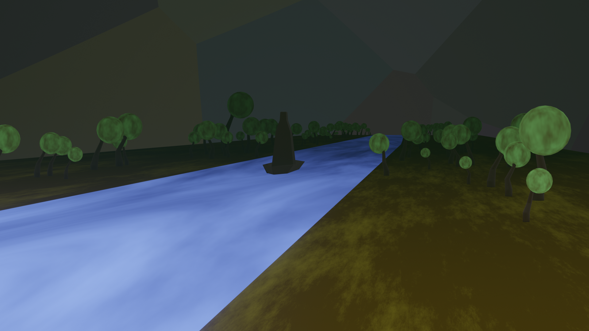
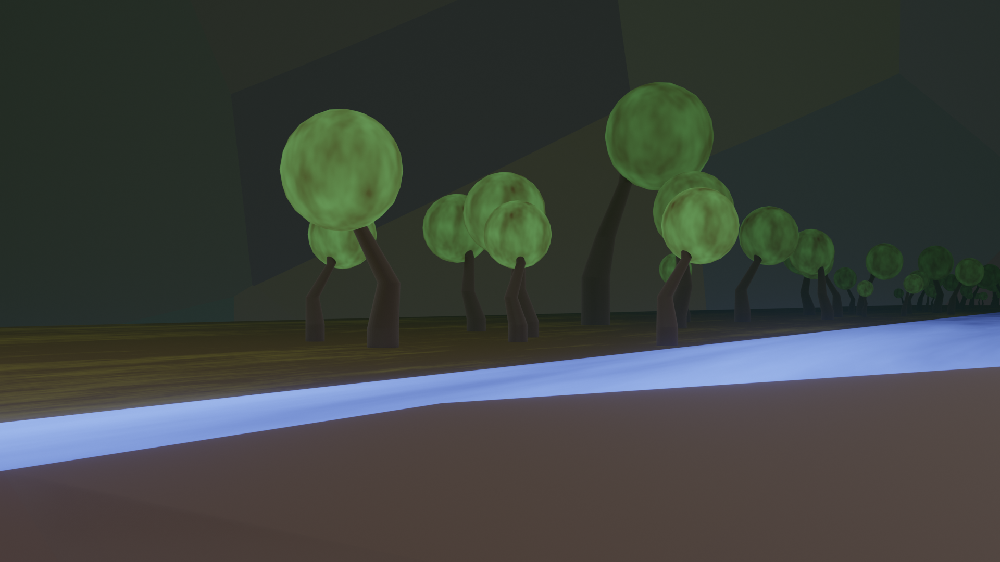

Infernix
VENI ET OBLIVISCERE PECCATA TUA IN INFERNO
Acceuil :
A l'entrée du parc, thanatos vous acceuille et vous emmène au lac Averne
la ou se trouve la billeterie à Obole (5€ l'Obole) que vous pourrez donner à Charon.
Pour qu'il vous emmène à la partie des enfers que vous voulez visiter,
la ou se trouveront les différentes attractions.
Le Rocher de Sisyphe :
Si vous demandez au passeur de voir Sisyphe, il vous déposera à une chaîne de montagne en échange d'une Obole
et vous prendrez place dans le rocher sur le manège à sensations à tràvers les differentes collines de Sisyphe.
Le Fleuve de Tantale :
Si vous redemandez à Charon d'aller voir Tantale,
il naviquera jusqu'a son fleuve dont le niveau d'eau change régulièrement
(attention aux grands arbres fruitiers au passsage...).
 
Restaurant :
Menu du Jour :
(Entrée) Salade d'Ambroises et de Nectares de l'Olympe
(Plat) Le Tartare d'Hadès
(Dessert) L'elixir des Dieux